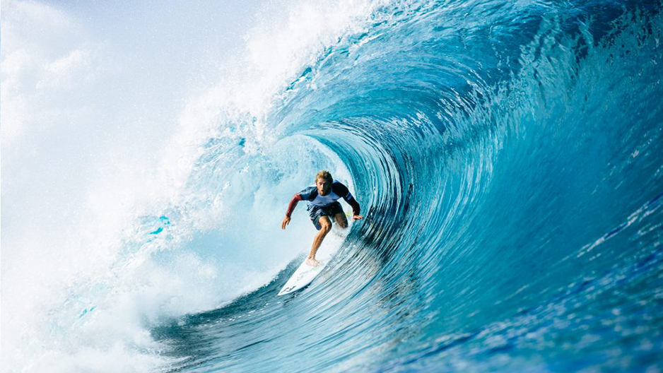

Miguel Tudela, nacido el 19 de junio de 1995 en Lima, Perú, es un destacado surfista profesional. Comenzó a surfear a una edad temprana en las playas de Lima, donde rápidamente demostró un talento natural para el deporte.
A lo largo de su carrera, Tudela ha competido en numerosos eventos internacionales, representando a Perú en el escenario mundial del surf. Ha participado en el Circuito Mundial de Surf de la WSL y en eventos clasificatorios como el QS (Qualifying Series), donde ha destacado por su habilidad técnica y su estilo fluido.
Miguel Tudela ha conseguido varias victorias importantes a lo largo de su carrera, destacando su victoria en el Claro Open Pro - Copa Tubos en 2017, un QS 3000 celebrado en Punta Hermosa, Perú. Además, ha participado en eventos importantes como los ISA World Surfing Games, representando a la selección peruana.
Su dedicación y talento han contribuido al crecimiento y la reputación del surf peruano en el ámbito internacional, convirtiéndose en un referente para la nueva generación de surfistas peruanos.
